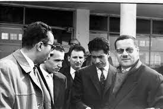
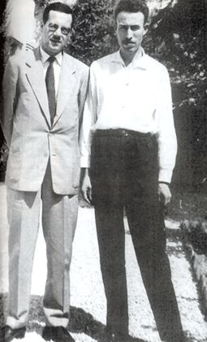
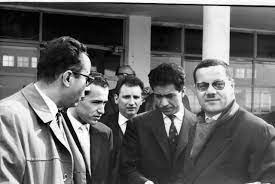
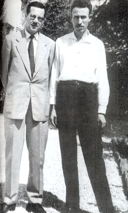
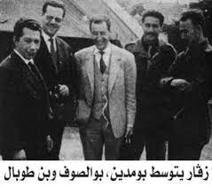
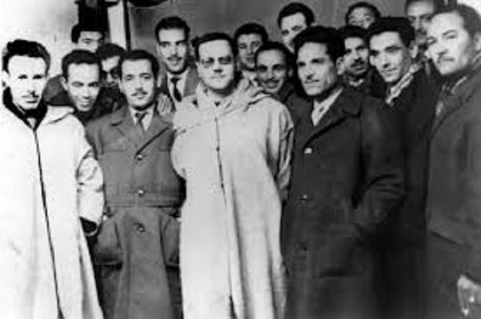
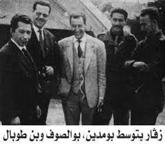
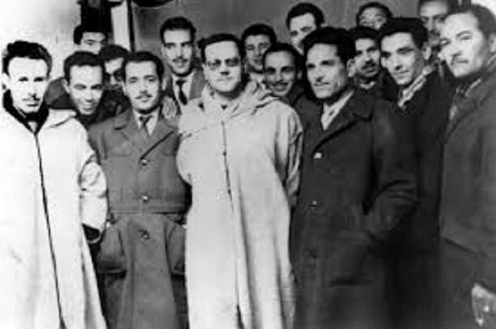

Biographie :
La jeunesse et les débuts politiques :
Abdelhafid Boussouf était un militant et combattant algérien pour l'indépendance. Né le 8 avril 1926 à Tébessa en Algérie, il a grandi dans une famille modeste et a commencé à s'engager dans le mouvement nationaliste algérien dès son adolescence.
La création du FLN et le rôle de Boussouf :
Boussouf a rejoint les rangs de l'Armée de libération nationale (ALN) en 1954, au début de la guerre d'indépendance, et a rapidement gravi les échelons grâce à ses compétences militaires et son leadership. Il a été l'un des membres fondateurs du Front de libération nationale (FLN) et a occupé plusieurs postes de haut niveau dans l'organisation, y compris celui de chef d'état-major de l'ALN.
Il est devenu l'un des membres fondateurs du FLN et a joué un rôle clé dans la planification de la guerre d'indépendance algérienne.
Les négociations de paix avec la France :
Boussouf a joué un rôle clé dans la planification et la coordination de la guerre d'indépendance algérienne, en particulier en ce qui concerne les opérations militaires et le recrutement de combattants. Il a également été l'un des principaux négociateurs du FLN dans les pourparlers de paix avec la France, qui ont abouti aux accords d'Evian en 1962.
La carrière politique post-indépendance :
Après l'indépendance de l'Algérie, Boussouf a occupé plusieurs postes gouvernementaux importants, notamment celui de ministre de l'Intérieur et de la Défense. Il a également été membre du Comité central du Parti de la révolution algérienne (PRA), qui a remplacé le FLN en tant que parti unique du pays.
L'exil et la mort :
Boussouf a finalement été écarté du pouvoir en 1967 et a été exilé en Union Soviétique jusqu'en 1980, date à laquelle il est rentré en Algérie et est décédé peu de temps après.
.jpg) 



.jpg) 


